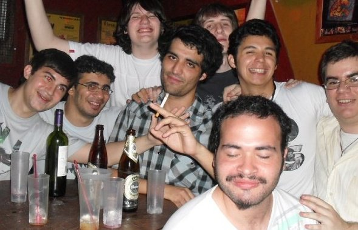

Mi generación fue de transición: crecí viendo cómo el mundo empezaba a llenarse de pantallas y códigos, pero todavía había algo de magia en hacerlo todo a mano, sin la inmediatez del internet. Para compartir mis ideas y proyectos, no bastaba con un clic, tenía que sentarme, pensar, y armar líneas de código que realmente funcionaran. Subir algo a GitHub era todo un ritual, no solo un botón.
No soy un deportista nato —lo intenté y lo confirmé— pero encontré en la programación mi cancha, aunque a veces siento que sigo calentando la muñeca, esperando ese momento en que toda la teoría y la práctica se junten para despegar.
Mis días se dividen entre estudiar, organizar mis proyectos y darle forma a las ideas que me motivan, buscando que algún día se transformen en algo real que también me permita salir adelante y cuidar de mi hija. Sé que la confianza no llega de un día para otro, ni que los resultados sean inmediatos, pero tengo la certeza de que cada línea de código que escribo, cada error que corrijo, me acerca a eso que quiero construir: un futuro mejor, con disciplina, ganas y sin perder la pasión
Inicio
Infancia
Adultez